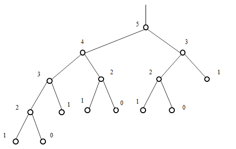

Рекурсивные алгоритмы наиболее пригодны в случаях, когда поставленная задача или используемые данные определены рекурсивно. Но это не значит, что при наличии таких рекурсивных определений лучшим способом решения задачи непременно является рекурсивный алгоритм.
Программы, в которых следует избегать использования рекурсии, можно охарактеризовать следующими схемами, изображающими их строение:
P ≡ if B then (S; P)
P ≡ (S; if B then P)
Эти схемы естественно применять в тех случаях, когда вычисляемые значения определяются с помощью простых рекуррентных соотношений . Ярким примером таких случаев служит широко известная задача вычисления факториалов:
n!=1∙2∙3∙…∙n
Очередной факториал n! можно вычислить по предыдущему как:
n!=(n-1)!∙n
Рассмотрим рекурсивный алгоритм:
function Factorial(n: integer): integer;
begin
if n > 1 then
Factorial := n * Factorial(n-1)
else
Factorial := 1;
end;В данном примере очевидно, что рекурсию можно заменить обычной итерацией. Итерационный алгоритм будет выглядеть следующим образом:
function Factorial(n: integer): integer; x := 1; for i := 2 to n do x := x * i; Factorial := x; end;
Следует понимать, что вызов функций влечет за собой некоторые дополнительные накладные расходы, поэтому итерационные решения работают быстрее рекурсивных.
Рассмотрим частный случай рекуррентных соотношений, когда следующее значение в последовательности зависит не от одного, а сразу от нескольких предыдущих значений. Примером может служить известная последовательность Фибоначчи, в которой каждый следующий элемент есть сумма двух предыдущих:
xn=xn-1+xn-2,x0=1,x1=1
Возможная рекурсивная реализация:
function Fib(n: integer): integer;
begin
if n > 1 then
Fib := Fib(n-1) + Fib(n-2)
else
Fib := 1;
end;Каждый вызов Fib создает сразу две копии себя, каждая из копий – еще две и т.д. Количество операций растет с номером n экспоненциально, хотя при итерационном решении достаточно линейного по n количества операций. Дерево рекурсивных вызовов, например, для n=5 можно представить следующей схемой:

Приведенный пример показывает, как не следует использовать рекурсию. Но заметим, что если существует быстрое итерационное решение, то тот же цикл можно реализовать с помощью рекурсивной процедуры или функции. Например:
function Fib(x1, x2, n: integer): integer;
var
x3: integer;
begin
if n > 1 then
begin
x3 := x2 + x1;
x1 := x2;
x2 := x3;
Fib := Fib(x1, x2, n-1);
end else
Fib := x2;
end;Любые рекурсивные процедуры и функции, содержащие всего один рекурсивный вызов самих себя, легко заменяются итерационными циклами. Чтобы получить что-то, не имеющее простого нерекурсивного аналога, следует обратиться к процедурам и функциям, вызывающим себя два и более раз. В этом случае множество вызываемых процедур образует уже не цепочку, а целое дерево. Существуют широкие классы задач, когда вычислительный процесс должен быть организован именно таким образом. Как раз для них рекурсия будет наиболее простым и естественным способом решения.